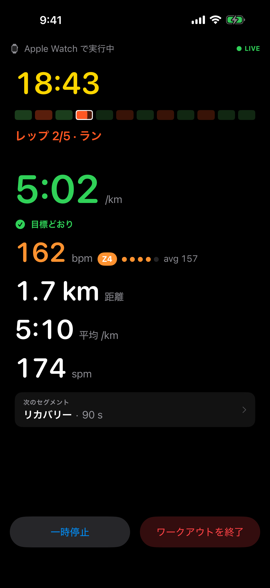
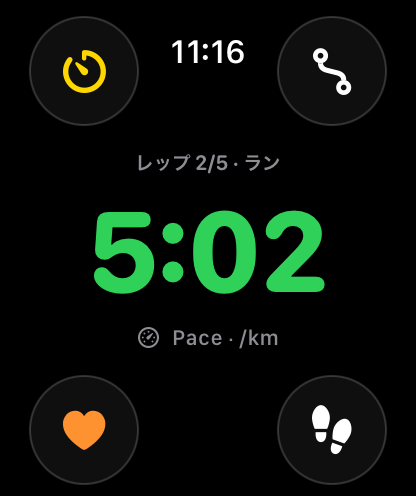
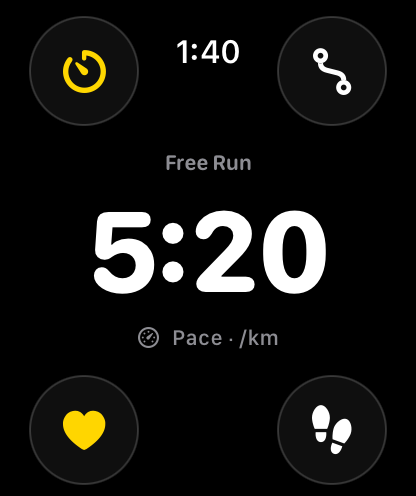

走る習慣をつくる
ラン・ウォークから始めるか、これまでの経験に合う定期的なトレーニングを選びます。
ランニングプラン · IPHONE & APPLE WATCH
走る習慣をつくるときも、次のレースを目指すときも。RunCraft はプラン、トレーニングペース、ワークアウトガイドをまとめ、今日とその先をわかりやすくします。
無料ダウンロード · 21 日間のフル体験 · サブスクなし


あなたの目標から
レースの予定がなくても始められます。
ラン・ウォークから始めるか、これまでの経験に合う定期的なトレーニングを選びます。
まずレースの目標を保存し、対応するプランと必要な準備・期間を確認します。
体験期間中または Lifetime でフリーランを開始し、走った記録を残します。
定期的に走るか、レースの日付と距離を保存します。名前は任意です。目標の保存だけでは現在のプランは置き換わりません。
関連する記録や保存済みの入力を確認します。変わった点を直し、プランに必要な不足情報を補います。
セッション、日程、準備条件を確認してからプランを使います。目標があるだけで、すべてのプランが適するわけではありません。
走る前に
予定されたセッションと目的を、最近のランと一緒に確認。異なる練習には、それぞれのペースと役割があります。
走っている間
iPhone または Apple Watch で、現在のステップ、ペース、進行を確認しながら練習。次の動作を確かめる手間を減らします。

走った後に
距離、スプリット、ペース、心拍数を、利用可能な運動強度や天気と一緒に振り返ります。プランの完了は次の選択への節目であり、自動的な強度アップではありません。
始め方、ペースの意味、レースや休養の後の進め方。
シンプルな料金
無料ダウンロード。Lifetime は任意の一度きりの購入です。サブスクや自動更新はありません。
プラン、ガイド付き記録、分析を試してから購入を検討できます。
Apple ヘルスケアからの読み込みと基本履歴、VDOT、走行距離の確認は継続できます。体験後に RunCraft から練習を開始するには Lifetime が必要です。
プランと RunCraft での記録を解除。購入の復元に対応し、対象となる旧有料ユーザーはフルアクセスを保持します。
体験期間は最初に App Store で取得した日から始まります。初回起動日ではありません。地域の現在価格はアプリに表示されます。対象の Lifetime 購入は Apple のファミリー共有に対応します。
いいえ。iPhone だけでもガイド付きワークアウトを実行できます。ペアリングした Apple Watch では手首で進行確認や操作ができます。利用可能なデータは端末と権限によって異なります。
すべての経路で必要なわけではありません。ラン・ウォークやフリーランから始められます。一部のプランには経験、ペースの参考値、十分な準備期間が必要です。
変わりません。目標を保存してから、練習を別途設定します。既存の練習と履歴は保持され、新しいプランは内容と準備条件の確認が必要です。
されません。回復の観察は背景や注意点を示します。代替練習を自動計算したり、練習の準備ができたと保証したりはしません。
次の方向と関連する保存済みの背景を確認します。新しいプランには別の確認が必要で、過去の記録だけで現在の準備や回復は証明できません。
RunCraft アカウントは不要で、広告や第三者の分析追跡はありません。端末上で処理し、一部の記録はプライベート iCloud データベースで同期できます。サポート用の診断ファイルは、自分で共有した場合にのみ送信されます。
RUNCRAFT
プラン、練習、アプリに関する質問は、お気軽にご連絡ください。 support@marstudio.app